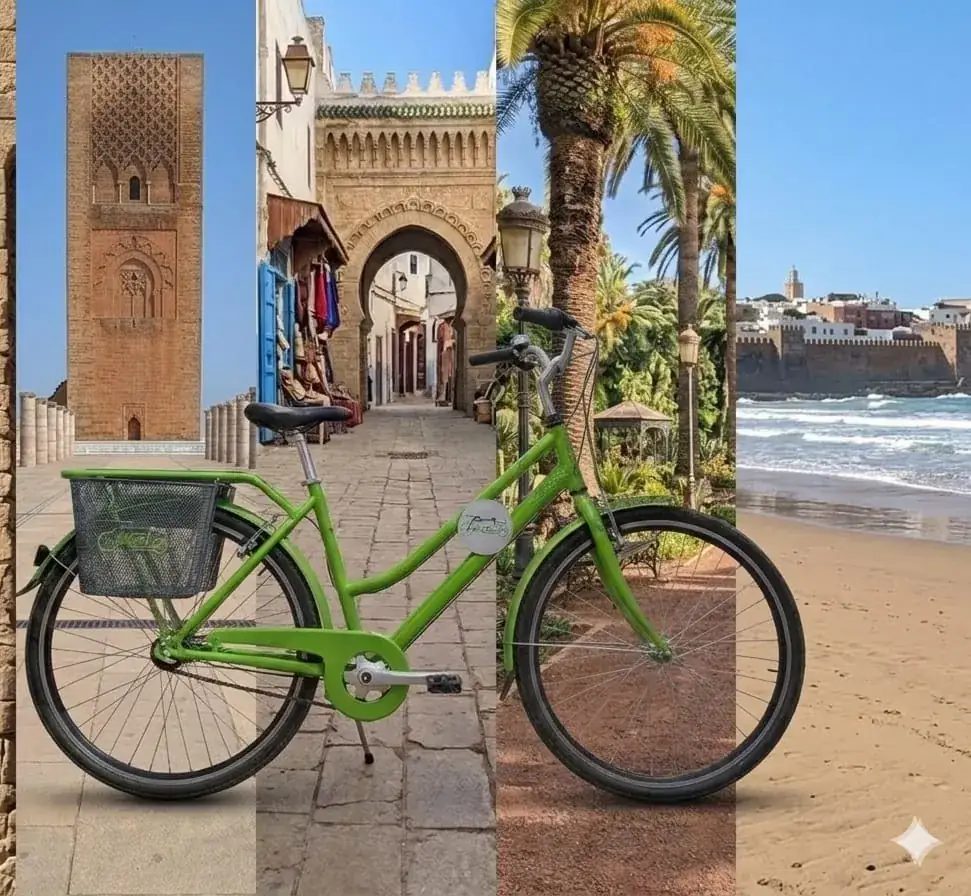
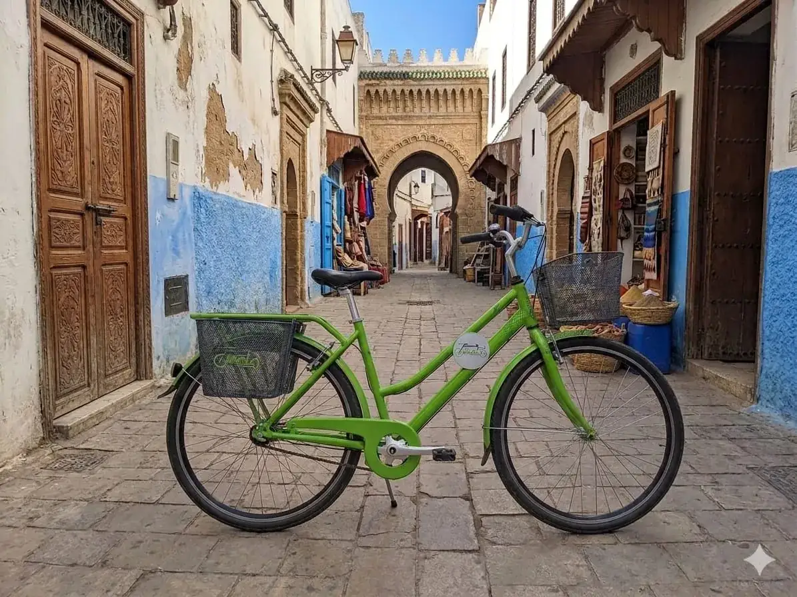

Visible
Consultez les vélos disponibles avant de vous déplacer.

Pikala à Rabat
Trouvez une station, scannez un vélo et partez depuis votre téléphone.
Disponibilités en cours de chargement…
Simple et rapide
Tout se fait depuis votre téléphone, du départ au retour.
Repérez une station et ses vélos disponibles.
Scannez le QR code pour déverrouiller le vélo.
Parcourez Rabat à votre rythme.
Déposez le vélo dans une station Pikala.
Disponibilités réelles
La carte affiche les stations actives transmises par Pikala.
Pensé pour la ville
Consultez les vélos disponibles avant de vous déplacer.
Déverrouillez votre vélo sans borne ni carte physique.
Prenez et restituez votre vélo dans une station Pikala.
Tarifs
Les prix publiés ici proviennent du catalogue Pikala.
Abonnement Pikala
Le tarif en ligne sera affiché dès sa publication.
Voir l’offre
Rabat autrement
Pour rejoindre un quartier, une promenade ou un rendez-vous, Pikala donne une option simple aux trajets du quotidien.
Voir les stationsAide
Connectez-vous, ouvrez le scanner et visez le QR code du vélo.
Dans une station Pikala active indiquée sur la carte.
Consultez la disponibilité en direct et choisissez une autre station proche.
Le support est accessible depuis votre espace après connexion.
Votre prochain trajet
Créez votre compte, choisissez votre offre et trouvez une station.
Commencer